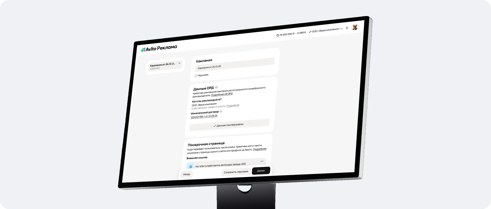
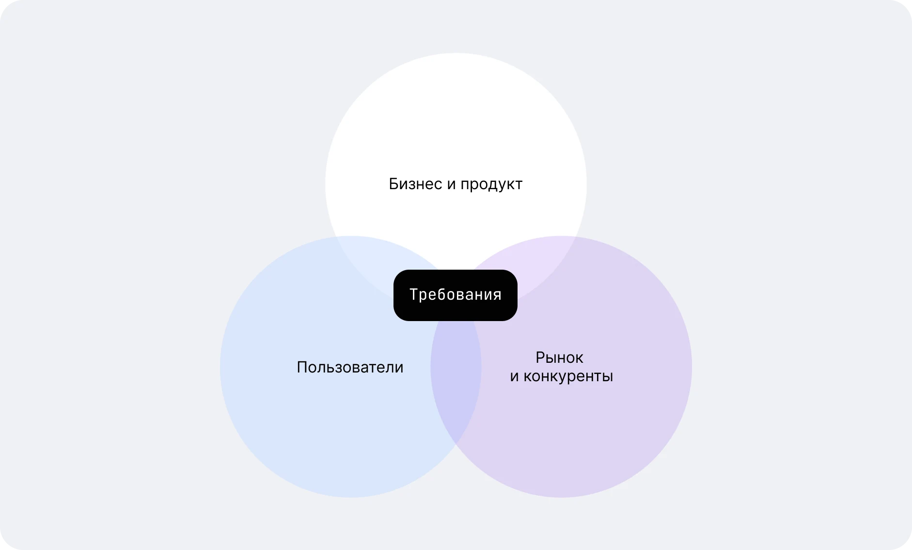
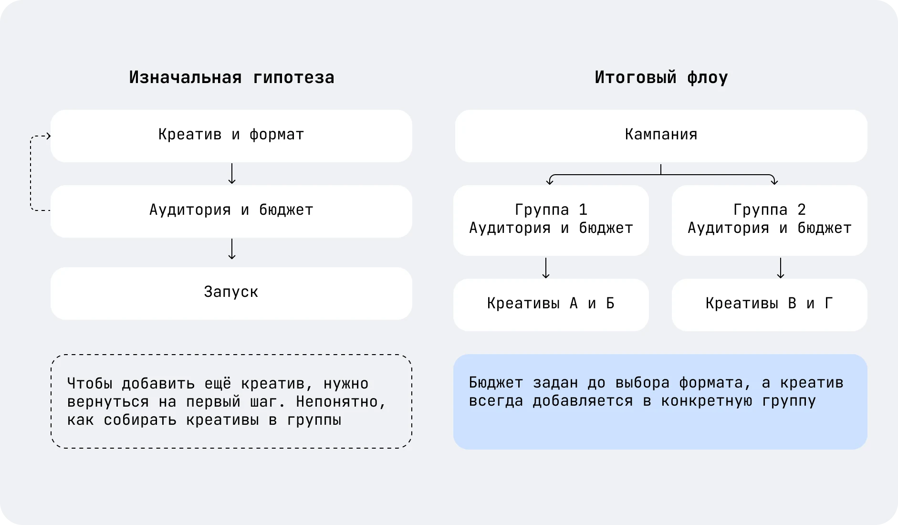
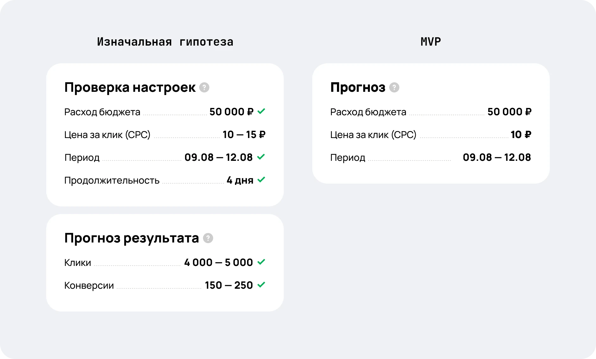
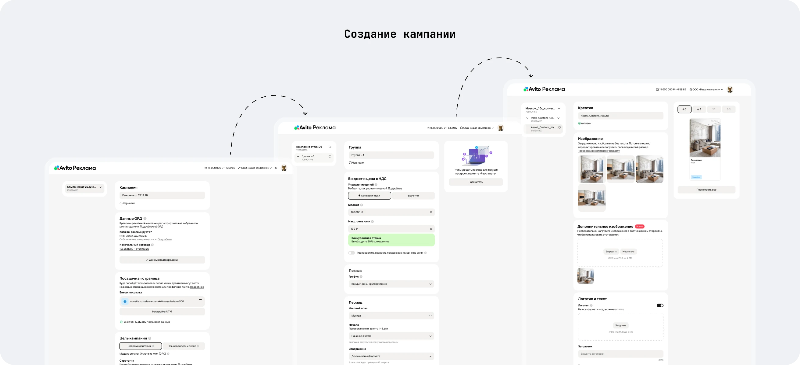
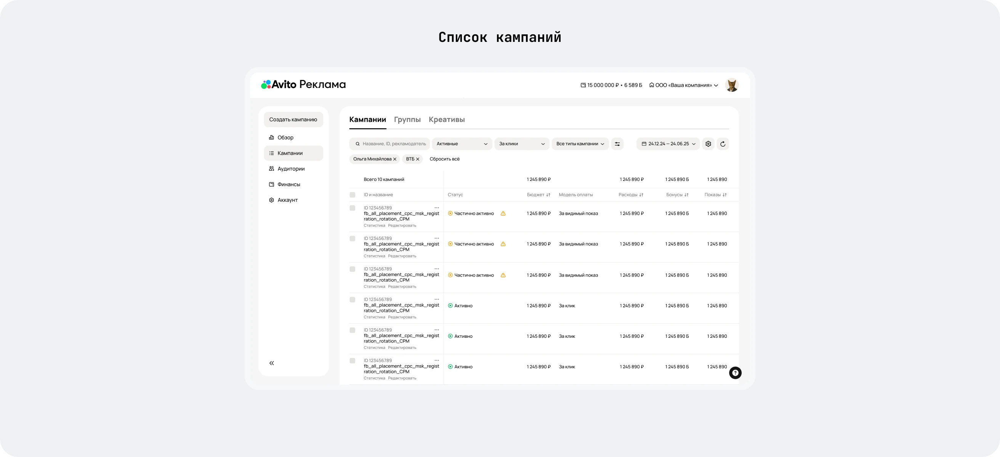
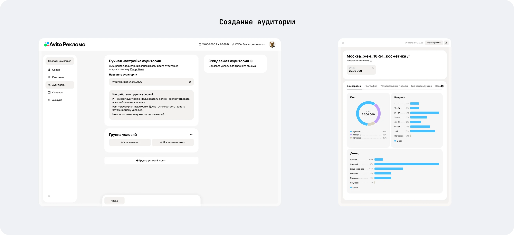
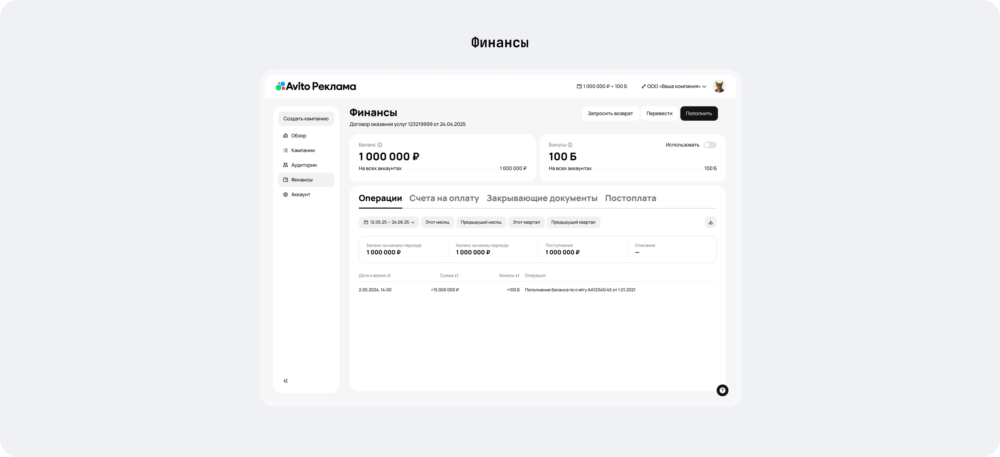
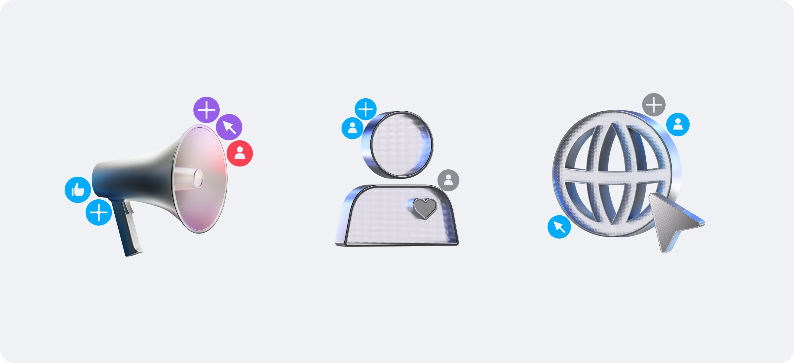

Запуск кабинета Авито Рекламы
Спроектировала рекламный кабинет с нуля: от сбора
требований до запуска.
Роль
Сбор требований, сценарии, дизайн
Команда
Продакт, разработка, юристы
Результат
Запуск на 3 месяца раньше срока, план теста превышен
Сроки
9 месяцев при плане в год

Проблема
Рекламу на Авито запускали через менеджеров. Рекламодатель
не мог ничего сделать сам, а запуск занимал около недели.
Бизнес хотел кабинет, где рекламодатель сам запускает
рекламу, следит за ней и быстро вносит правки.
Боль 1
Документы и согласование медиаплана перед каждым запуском
Боль 2
Нельзя самому следить за кампанией и вносить правки
Боль 3
Отчёты по рекламе трафик-менеджеры готовили вручную
Как решали
Продукта и исследований на старте не было.
Собрала требования из разных источников, проверила драфты
до прихода разработки и выстроила создание кампании.
Ниже ключевые шаги.
Шаг 1
Собрала требования, когда продукта ещё не было.
Разобрала кабинеты конкурентов, расспросила трафик-менеджеров, как они запускают рекламу и что просят клиенты, собрала опыт продактов и требования юристов.
Из этого вместе с продактом собрали CJM: регистрация → создание кампании → список кампаний → статистика → финансы.
Первые три месяца проектировала без разработки. Драфты сначала показывала трафик-менеджерам внутри Авито. Потом проверяли на рекламодателях: те быстро ориентировались, и драфты почти не пришлось исправлять.

Шаг 2
Выбрали порядок шагов в создании кампании.
Сначала рассматривали флоу, где рекламодатель начинает с креатива. Я разложила оба варианта на схемах и сходила с продактом к команде баннеров. Выяснилось, что места открутки зависят от бюджета: если выбрать формат раньше, кампания может не открутиться.
Остановились на порядке кампания → группа → креатив.

Шаг 3
Сократила прогноз до того, что можно посчитать к релизу.
Пользователи хотели видеть ориентир по показателям до запуска.
Затем вместе с продактом, отвечавшим за движок прогнозов, разобрали, что можем считать и что успеем к релизу, и я нарисовала блок под MVP.

Решение
Собрала интерфейс на дизайн-системе Авито. Её компоненты
не были рассчитаны на сложную логику рекламного кабинета,
поэтому часть пришлось дорабатывать.





Результаты
Запустили кабинет за 9 месяцев вместо года.
Рекламодатель запускает рекламу сам.
В среднем запуск занимает 1 день с учётом модерации;
раньше через менеджера уходило около недели.
Документы и данные ОРД подтверждаются один раз,
а не согласовываются перед каждым запуском.
Кампании, расходы и статистика собраны в кабинете.
Рекламодатель следит за результатом и вносит правки
без менеджера.
Отчёты больше не нужно готовить вручную: статистика
доступна в кабинете.
На тесте план по числу кампаний выполнили на 134%,
по выручке — на 106%.
Статистику в шторке переиспользовали в кабинете селлера.